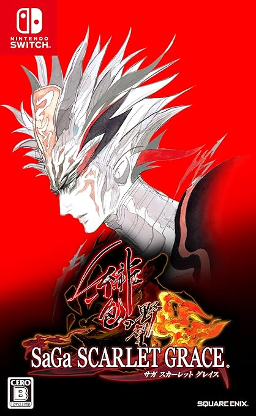
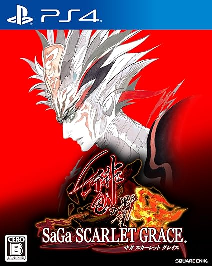
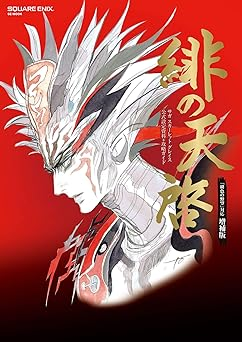
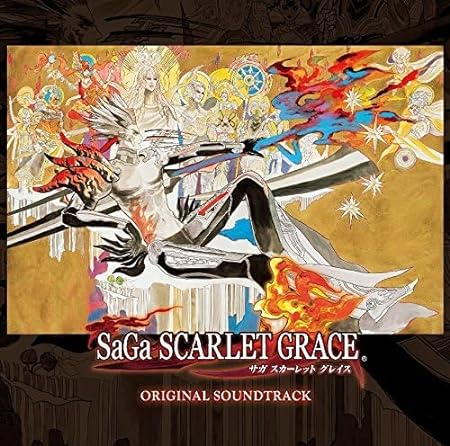

【整備中】サガスカ敵情報
ホーム > サガスカ > 敵情報×：クリティカル
| 敵の名前 | 属性 | 冷 | 熱 | 電 | 突 | 打 | 斬 | 特効 | ドロップ | 状態異常 | 使用技 |
|---|---|---|---|---|---|---|---|---|---|---|---|
| 土蛇 | 土 | × | 〇 | 〇 | 〇 | 〇 | ・毒牙（突） ・かみつき（突） ・ファングクラッシュ（突） | ||||
| ラプトルクロウ | 木 | 〇 | 〇 | 〇 | × | 〇 | 〇 | ・カギ爪（斬） ・クチバシ（突） ・狂騒（敵全体怒り） | |||
| フォレストクロウ | 木 | × | 〇 | ・カギ爪（斬） ・急降下（突） | |||||||
| レッドウイング | 火 | 〇 | 〇 | 〇 | × | 〇 | 〇 | 毒入る | ・フェザーショット（単体突） ・急降下（単体突） ・狂騒 | ||
| グリーンウイング | 木 | 〇 | 〇 | × | 〇 | 〇 | 毒入る | ・カギ爪（斬） ・狂騒（全体怒り） ・クチバシ（突 ・マヒ付与） | |||
| ブラックウイング | 火 | 〇 | 〇 | 〇 | × | 〇 | 〇 | 眠り、毒、マヒ入る | ・急降下（突） ・狂騒（全体怒り） ・クチバシ（突 ・マヒ付与） | ||
| ゴールドウイング | 木 | 〇 | 〇 | 〇 | ・カギ爪（単体斬） | ||||||
| パラダイスバード | 木 | 〇 | 〇 | 〇 | × | 〇 | 〇 | 毒入る | ・カギ爪（単体斬） ・フェザーショット（単体突） ・狂騒 | ||
| シードレイク | 水 | × | 〇 | 〇 | 〇 | 〇 | 〇 | スタン入る | ・ついばみ（単体突） ・甘い息（単体眠り付与） ・毒霧（全体冷 ・毒付与） ・ショックウェイブ（全体打） | ||
| ブルードレイク | 〇 | 〇 | 〇 | 〇 | ・ | ||||||
| 人狼 | 金 | 〇 | 〇 | 〇 | 〇 | 〇 | 〇 | 眠り入る | ・アーマーブレイク（単体斬 ・防御ダウン） ・？？？→身代わり ・？？？→シャウト（全体攻撃 ・打・突に対してインタラプト） ・？？？→カウンター | ||
| ヴェアヴォルフ | 金 | 〇 | 〇 | 〇 | 〇 | 〇 | スタン、毒入る | ・アーマーブレイク（単体斬 ・防御ダウン） ・？？？→ブレイクカウンター（カウンター） ・？？？→シャウト（打に対するインタラプト） | |||
| コカトリス | 火 | 〇 | 〇 | 〇 | 〇 | 〇 | スタン、マヒ、毒入る | ・ショックウェイヴ（全体打） ・甘い息（単体眠り付与） ・ついばみ（突） | |||
| 赤霊獣 | × | 〇 | 〇 | ・ | |||||||
| バク | 水 | × | 〇 | 〇 | 〇 | 〇 | 〇 | 毒、マヒ入る | ・吠える（素早さアップ） ・強襲牙（突） ・青の舞（眠り全体） ・疾風強襲牙（突全体） ・毒霧（冷 ・全体毒・眠り付与） | ||
| ゴブリン術兵士 | 火 | 〇 | 〇 | 〇 | 〇 | 〇 | 〇 | 革のブーツ | 眠り、毒、スタン入る | ・超重力（全体打） ・叩く（単体打） ・ダブルヒット（単体打） ・ハードファイア | |
| ゴブリン術戦士 | 土 | 〇 | 〇 | 〇 | 〇 | 〇 | 〇 | スタン、マヒ入る | ・叩く（単体打） ・毒霧（全体冷） ・？？？→差し込み（斬 に対するインタラプト） | ||
| ゴブリン | 火 | 〇 | 〇 | 〇 | 〇 | 〇 | 〇 | 毒、マヒ入る | ・叩く（単体打） ・ガラガラストライク（単体打） ・フルフラット（単体打） ・二連打（単体打） | ||
| ゴブリン戦士 | 土 | 〇 | 〇 | 〇 | 〇 | 〇 | 〇 | スタン、眠り入る | ・斬る（単体斬） ・フルスラッシュ（単体斬） ・？？？→刺し突き（斬にインタラプト） ・？？？→乱斬り（突に対するインタラプト ・全体斬 ・素早さダウン） | ||
| ゴブリン剣士 | 火 | 〇 | 〇 | 〇 | 〇 | マヒ入る | ・斬る（斬） ・フルスラッシュ（斬） ・？？？→乱斬り（突に対するインタラプト ・全体斬） ・ゴブリンスタブ（突） | ||||
| オーガ | 火 | 〇 | 〇 | 〇 | 〇 | 〇 | 眠り、スタン、マヒ、毒入る | ・アーマーブレイク（斬） ・火炎放射（全体熱） ・？？？→身代わり | |||
| アシュテールプラント | 木 | 〇 | × | 〇 | 〇 | 〇 | 〇 | 大木断 | スタン、毒入る | ・花粉（打 ・眠り付与） ・シード（突） ・？？？→花粉バースト（打・突に対するカウンター ・眠り付与） | |
| マーフォーク | 水 | 〇 | 〇 | × | 〇 | 〇 | 〇 | ・メイルブレイク（単体斬） ・？？？→みがわり ・叫ぶ（全体電 ・素早さダウン） | |||
| カエル闘士 | 水 | 〇 | 〇 | × | 〇 | 〇 | 〇 | ・ハンマーボール（打 ・スタン付与） ・サモンダンス | |||
| カエル兵士 | 水 | 〇 | 〇 | × | 〇 | 〇 | 〇 | サムライソードドロップ？ | スタン、眠り、マヒ入る | ・ハンマーボール（単体打） ・カエルコンボ（単体打 ・スタン付与） ・カエルレイン（全体打冷） ・毒霧（全体冷 ・毒付与） ・？？？→カウンターキック（突に対するカウンター？） ・ウェルカムダンス→カエル兵士召喚 | |
| カエル戦士 | 水 | 〇 | 〇 | × | 〇 | 〇 | 〇 | ナイアガラバスター | マヒ入る | ・ハンマーボール（打 ・スタン付与） ・カエルコンボ（単体打） ・毒霧（冷 ・全体毒付与） | |
| カエル衛士 | 水 | 〇 | 〇 | × | 〇 | 〇 | 〇 | 眠り、スタン、毒入る | ・ハンマーボール（単体打 ・スタン付与） ・カエルコンボ（単体打） ・サモンダンス ・カエルレイン（全体打冷 ・攻撃・防御力ダウン） ・？？？→カウンターキック | ||
| サハギン | 〇 | 〇 | × | 〇 | 〇 | 〇 | ・？？？→身代わり ・？？？→ブレイクカウンター ・アーマーブレイク（斬） | ||||
| ペギー | 金 | 〇 | 〇 | 〇 | × | 〇 | 〇 | スタン、マヒ入る | ・ペンペン斬り（単体斬） ・？？？→刺し突き（斬に対するカットイン） ・破壊風（全体斬） ・ダブルアタック（単体斬） | ||
| レッドクラブ | 水 | × | 〇 | 〇 | 毒入る | ・滅多刺し（全体突） ・食べる（敵を食べる） ・？？？→インタラプトスタブ（突に対するインタラプト ・全体攻撃） | |||||
| 山賊（小剣） | 金 | 〇 | 〇 | 〇 | 〇 | 〇 | × | 毒入る | ・高速突き（単体突） ・毒蜂（単体突） ・ライトニングピアス（単体突・電） ・？？？→アクセルスナイパー（突に対するインタラプト ・単体 ・素早さアップ） | ||
| 山賊（斧） | 水 | 〇 | 〇 | 〇 | 〇 | 〇 | × | マヒ、眠り、毒入る | ・スマッシュ（単体斬・打） ・大木断（単体斬） ・パワーブレイク（単体斬・打） ・かかと斬り（単体斬） | ||
| 海賊（剣） | 〇 | × | ・スマッシュ（斬 ・打） | ||||||||
| 海賊（体術） | 金 | 〇 | 〇 | 〇 | 〇 | × | マヒ、眠り入る | ・パンチ（打） ・稲妻キック（打・電） ・空気投げ（打） ・？？？→ジョルトカウンター | |||
| 海賊（棍棒） | 水 | 〇 | × | ・ヒートビート（打・熱） ・冷徹撃（打・冷） ・かめごうら割り（打） | |||||||
| ギャング（体術） | 火 | 〇 | × | ・パンチ（単体打） ・スライディング（単体打 ・素早さダウン） ・稲妻キック（単体打・電 ・バンプ） | |||||||
| ギャング（棍棒） | 木 | 〇 | 〇 | × | ・ヒートビート（単体打・熱） ・回し打ち（単体打） ・？？？→疾風打（突に対するインタラプト） | ||||||
| グルモン兵 | 水 | 〇 | 〇 | × | ・回し打ち(打） ・骨砕き（打） ・？？？→（疾風打 ・突に対してインタラプト） | ||||||
| オグニアナ | 土 | 〇 | 〇 | × | 盗賊の指輪？ | ・かかと斬り（斬） ・かぶと割り（斬・打） ・？？？→地獄断面（打に対するインタラプト） | |||||
| 炭鉱掘り | 土 | 〇 | × | ・回し打ち（打） ・冷徹撃（打・冷） ・骨砕き（打） ・？？？ | |||||||
| カメリア | 火 | 〇 | 〇 | 〇 | 〇 | × | 毒、マヒ入る | ・高速突き（突） ・毒蜂（突） ・金のトロイメライ（突） | |||
| ル・シャッセの大剣士 | 火 | 〇 | 〇 | 〇 | 〇 | × | 毒、マヒ入る | ・強撃（斬・打） ・隼斬り（斬） ・スイングダウン（打） ・音速剣（突） ・地走り（斬） ・ライジングノヴァ（打・熱） ・スイングダウン（打） ・？？？→剣風旋（突に対するインタラプト） | |||
| コンスタンティン | 土 | 〇 | 〇 | 〇 | 〇 | × | 眠り、毒入る | ・？？？→かすみ青眼（打に対するカウンター） ・地走り（斬） ・ヴァンダライズ（単体打） ・払車剣（全体斬） ・地ずり残月（単体斬） | |||
| 窃盗団員（体術） | 水 | 〇 | 〇 | × | ・パンチ（単体打） ・スライディング（単体打） ・サミング（単体打） | ||||||
| 窃盗団員（棍棒） | 金 | 〇 | 〇 | × | ・ヒートビート（打・熱） ・回し打ち（単体打） ・骨砕き（単体打） ・かめごうら割り（単体打） | ||||||
| 窃盗団員（大剣） | 金 | 〇 | 〇 | × | ・流し斬り（単体斬） ・強撃（単体斬・打） | ||||||
| フォモーワ術士 | 水 | 〇 | 〇 | × | スタン入る | ・召雷（全体電） ・茨の呪縛（単体斬・突 ・素早さダウン） | |||||
| 傭兵 | 土 | 〇 | 〇 | 〇 | 〇 | × | 眠り、毒、マヒ入る | ・デブリスフロー（全体打 ・術） ・気合い打ち（単体打） | |||
| 真スピラ騎士 | 木 | 〇 | 〇 | × | マヒ入る | ・音速剣（突） ・隼斬り（斬） | |||||
| フォモーワ槍兵 | 水 | 〇 | 〇 | × | ロングスピアドロップ？ | 眠り入る | ・鮫竜波（単体突・冷 ・毒付与） ・閃光突き（単体突） ・スパイラルチャージ（単体突・打） | ||||
| ビルコニア兵（大剣） | 土 | マヒ、眠り入る | ・流し斬り（単体斬） ・強撃（単体斬・打） ・払車剣（全体斬） | ||||||||
| ビルコニア兵（小剣） | 金 | 〇 | 〇 | マヒ、毒入る | ・高速突き（単体突） ・？？？→身代わり ・感電衝（単体突・電） ・イド・ブレイク（単体突・混乱付与） | ||||||
| ピフキマリガン神殿騎士（弓） | 火 | 〇 | 〇 | × | 狙い射ち（単体突）、フレイムアロー（単体突・熱、怒り付与）、影縫い（単体マヒ付与ダメージなし） | ・ | |||||
| ピフキマリガン神殿騎士（大剣） | 木 | 〇 | 〇 | × | 眠りマヒ入る | ？？？ | ・ | ||||
| レッドスライム | 火 | 〇 | ？ | 〇 | 〇 | 〇 | 毒入る | ・ゼラチナスバリア（防御アップ） ・熱気（全体熱） ・？？？ | |||
| ダークマター | 〇 | 〇 | × | 〇 | 〇 | 〇 | ・？？？→身代わり ・ゼラチナスバリア ・粘液（冷） | ||||
| イエロースライム | 木 | 〇 | × | 〇 | 〇 | ・ゼラチナスバリア（防御アップ） ・召雷（電） ・電撃（電 ・全体） | |||||
| ヴァッハズトイ | 火 | ？ | 〇 | ？ | ？ | 巨人の剣？ | 毒入る | ・？？？→身代わり ・フラッシュファイア（全体熱） ・責罰の炎（全体熱） | |||
| ブルースライム | 水 | 〇 | 〇 | ？ | 〇 | ？ | ？ | ・ゼラチナスバリア（防御アップ） ・冷気（全体冷） ・アクアボール（単体冷） ・？？？→身代わり ・毒霧（全体冷 ・毒付与） | |||
| 食肉花 | 木 | 〇 | × | 〇 | 〇 | 大木断 | 毒入る | ・体当たり（打） ・花粉（全体打 ・毒付与） ・？？？→花粉バースト（斬 ・打に対するカウンター？） | |||
| ヒトキノコ | 木 | 〇 | × | 〇 | 〇 | 〇 | ・毒撃（単体打） ・ポイゾナスバイト（単体毒） ・ポイズンガス（冷 ・全体毒付与） | ||||
| ブルーワーム | 水 | × | 〇 | 〇 | 〇 | 〇 | 〇 | スタン入る | ・毒牙（単体突 ・毒付与） ・金切声（全体電 ・スタン付与） ・かみつき（単体突） | ||
| イビルワーム | 木 | × | 〇 | 〇 | 〇 | 〇 | 大木断 | ・麻痺牙（単体突） ・かみつき（単体突） ・金切声（全体電） | |||
| プラントワーム | 木 | 〇 | × | 〇 | 〇 | 〇 | 〇 | 大木断 | ・麻痺牙（突） ・毒牙（突） ・かみつき（突） | ||
| マンイーター | 木 | × | 〇 | 〇 | 〇 | 〇 | 大木断 | 眠りはinvalid | ・体当たり（単体打） ・花粉（全体打 ・素早さデバフ） ・シード（単体突） ・？？？ | ||
| デビルジャクシ | 水 | 〇 | 〇 | × | 〇 | 〇 | 〇 | ・ハンマーボール（単体打） ・毒霧（冷） ・？？？→カウンターキック（突カウンター？） | |||
| リリス | 火 | 〇 | 〇 | 〇 | 〇 | 〇 | 〇 | ・ひっかく（斬） ・サモンファミリア ・ヒールスラッシュ（斬） | |||
| ハルピュイア | 木 | 〇 | 〇 | 〇 | 〇 | 〇 | 〇 | 眠り入る | ・ひっかく（単体斬） ・ヒールスラッシュ（単体斬） ・サモンファミリア（ハルピュイア（木）を召喚） ・？？？→フェザーアタック（突に対するインタラプト） ・？？？→絶唱（斬に対するインタラプト ・全体攻撃＋スタン付与） | ||
| サキュバス | 火 | 〇 | 〇 | 〇 | 〇 | 〇 | ・ひっかく（斬） ・サモンファミリア（イビルワーム召喚） ・ヒールスラッシュ（斬 ・バンプ） ・？？？→フェザーダンス（打に対するカウンター？） ・？？？→フェザーアタック（突に対するインタラプト） | ||||
| クライサ | 火 | 〇 | 〇 | 〇 | 真珠の首飾り | マヒ、混乱入る | ・ヒールスラッシュ（単体斬） ・ひっかく（単体斬） ・？？？→フェザーアタック（突に対するインタラプト ・バンプ付与） | ||||
| フォモーワウィッチ | 火 | 〇 | スタン入る | ・ヒールスラッシュ（単体斬） ・サモンファミリア | |||||||
| スケルトン | 火 | 〇 | × | 〇 | 〇 | 〇 | 〇 | サムライソードドロップ？ | スタン入る | ・凝視（眠り） ・打ち下ろし（単体打） ・アッパースイング（単体打） | |
| アンデッド | 土 | 〇 | × | 〇 | 〇 | 〇 | 〇 | ・凝視（単体マヒ） ・打ち下ろし（単体打） ・アッパースイング（単体打） | |||
| ドラウグル | 土 | 〇 | × | 〇 | 〇 | 〇 | ・凝視（マヒ ・混乱） ・ダンス（全体怒り） ・ソードスロウ（突） | ||||
| ソードスレイブ | 土 | 〇 | × | 〇 | 〇 | 〇 | 〇 | ダブレットドロップ？ | スタン入る、眠りはinvalid | ・凝視（混乱） ・打ち下ろし（単体打） ・アッパースイング（単体打） | |
| イジュグの亡霊 | 土 | × | 〇 | 〇 | 〇 | ・凝視（混乱） ・打ち下ろし（打） ・アッパースイング（打） | |||||
| パイレーツゴースト | 火 | × | 〇 | 〇 | 〇 | 〇 | ・凝視（眠り） ・打ち下ろし（打） ・アッパースイング（打） | ||||
| ゾンビパイレーツ | 水 | × | 〇 | 〇 | ・凝視（マヒ） ・打ち下ろし（単体打） | ||||||
| ソードパイレーツ | 水 | 〇 | × | 〇 | 〇 | 〇 | 〇 | ・凝視（混乱） ・打ち下ろし（単体打） ・アッパースイング（単体打） | |||
| 冥府人参 | 木 | 〇 | × | 〇 | 〇 | 〇 | 〇 | スタン入る、眠りはinvalid | ・毒撃（単体打 ・毒付与） ・ポイズンガス（全体冷 ・毒付与のみ） ・死人ゴケ（全体冷 ・毒・怒り付与） | ||
| 屍騎士 | 金 | × | 〇 | 〇 | ・ポイズンガス（全体毒付与 ・ダメージなし冷） ・ポイゾナスバイト（突） ・？？？→カットイン毒撃（打属性攻撃に対してカットイン） | ||||||
| ジャイアントレモン | 木 | 〇 | × | 〇 | 〇 | ・挟み込み（打） ・ビンタ（打 ・怒り付与） ・岩石（打） ・？？？→斬に対してインタラプト（全体攻撃） | |||||
| 巨大樹 | 木 | 〇 | × | 〇 | 〇 | 〇 | 〇 | 大木断 | 毒入る | ・挟み込み（打） ・ビンタ（打 ・怒り付与） ・ハーベストボム（全体打） ・？？？→砂の嵐（斬に対してインタラプト（全体攻撃）） | |
| 化石樹 | 木 | 〇 | × | 〇 | 〇 | 毒入る | ・ビンタ（単体打 ・挑発付与） ・？？？→カウンターチョップ ・岩石（単体打） ・熱砂の嵐（突に対するインタラプト ・全体攻撃） | ||||
| 花精 | 木 | 〇 | 〇 | 〇 | 〇 | 〇 | 大木断 | ・突撃（打） ・？？？→花粉バースト（斬・突に対するカウンター？） | |||
| フラワーエレメンタル | 木 | 〇 | 大木断 | ・突撃（単体打） ・花粉（全体打 ・マヒ付与） ・？？？ | |||||||
| カニバルフラワー | 木 | × | 〇 | 〇 | 〇 | 眠りはinvalid | ・シード（単体突） ・花粉（全体打 ・素早さデバフ） ・？？？→花粉バースト（斬・突に対するカウンター？） | ||||
| イノシシ甲冑兵 | 金 | × | 〇 | 〇 | 〇 | 〇 | 〇 | 毒、マヒ、スタン入る | ・突進（打） ・かちあげ（打） | ||
| イノシシ武者 | 金 | × | 〇 | 〇 | 〇 | 〇 | 〇 | 猪かぶと | 毒、マヒ入る | ・突進（打） ・イノシシストライク（打） ・かちあげ（打 ・スタン付与） ・ヒップアタック（打 ・挑発（怒り付与）） | |
| イノ戦士 | 金 | 〇 | 〇 | 〇 | 〇 | 〇 | 毒、マヒ入る | ・突進（単体打） ・イノシシストライク（単体打） ・ヒップアタック（単体打 ・挑発（怒り付与）） ・カチアゲダイナミック（単体打 ・スタン付与） | |||
| ブラックハンマー | 金 | × | 〇 | 〇 | 〇 | 〇 | 〇 | 毒、スタン入る | ・突進（打） ・ハンマー（打 ・混乱付与） ・イノシシストライク（打） | ||
| イノシシ突撃兵 | 金 | × | 〇 | 〇 | 〇 | スタン、眠り、毒、マヒ入る | ・突進（単体打） ・ヒップアタック（単体打） ・イノシシストライク（単体打） | ||||
| イムホキエルの神獣 | 金 | × | 〇 | 〇 | 毒、眠り入る | ・突進（打） ・ハンマー（打 ・混乱付与） ・ヒップアタック（単体打） ・かちあげ（単体打） | |||||
| ゴロゴロムシ | 土 | 〇 | 〇 | × | 毒入る | ・体当たり（打） ・ハイドアタック（打） ・針（突 ・スタン付与） | |||||
| コクロムシ | 水 | × | ・ディレイングピアス（突 ・バンプ） ・暴走（全体打） ・？？？→カウンターストライク（打属性攻撃に対してカウンター） | ||||||||
| コケタマムシ | 土 | 〇 | 〇 | 〇 | × | マヒ、毒入る | ・体当たり（単体打） ・針（単体突） ・ゴロゴロアタック（打） | ||||
| バーゲスト | 火 | × | 〇 | 〇 | 〇 | 〇 | 〇 | 輝きのアームレット？ | スタン、毒、マヒ入る | ・強襲牙（突 ・スタン） ・疾風強襲牙（全体突 ・スタン） ・吠える（素早さアップ） | |
| 幽霊 | 〇 | × | 〇 | 〇 | 〇 | 〇 | ・毒撃（打） ・死人ゴケ（全体 ・冷） ・？？？→カットイン毒撃（打属性攻撃に対してカットイン） | ||||
| ゴースト | 土 | 〇 | ？ | 〇 | 〇 | ？ | ・毒撃（打） ・死人ゴケ（全体 ・冷） | ||||
| 誓いの悪霊 | 土 | 〇 | × | 〇 | 〇 | 〇 | 〇 | ユニコーンの涙 | ・毒撃（打） ・死人ゴケ（全体 ・冷 ・怒り・毒付与） ・？？？→カットイン毒撃（打属性攻撃に対してカットイン） | ||
| 水のエレメンタル | 水 | ？ | 〇 | ？ | 〇 | ・ブラスタ（単体電） ・精霊の支持 ・精霊の法力（詠唱短縮） ・毒霧（全体冷 ・毒付与） | |||||
| 木のエレメンタル | 木 | ？ | ？ | ・召雷（全体電） ・スプレッドブラスター（全体電） ・精霊の加護 | |||||||
| ダークイフリート | 〇 | 〇 | 〇 | 〇 | 〇 | ・突く（突） ・？？？→カウンターブレイズ（全体） ・生の刈り取り（斬） | |||||
| 星の守り手 | 金 | × | × | × | 〇 | 〇 | 〇 | スタン入る | ・ヒロイズム ・スリープ ・超重力（全体打） ・精霊の法力（詠唱短縮？） ・塔（突 ・斬） ・アーマーブレス ・ブラスター（単体電） ・スプレッドブラスター（全体電） ・召喚 | ||
| デイヴィジョーンズ | 水 | 〇 | 〇 | 〇 | スタン、毒、眠り入る | ・殴る（単体打） ・うごめく（攻撃アップ） ・メイルシュトローム（全体冷） | |||||
| カーミラ | 火 | 〇 | 〇 | 〇 | 〇 | 〇 | 〇 | サムライソードドロップ？ | ・ひっかく（単体斬） ・ヒールスラッシュ（単体斬） ・？？？→フェザーアタック（突に対するインタラプト ・バンプ） ・？？？→絶唱（斬に対するインタラプト ・全体攻撃 ・スタン付与） | ||
| 火の神像 | 火 | ？ | ？ | ・ブラスター（電） | |||||||
| 金の神像 | 金 | × | × | 〇 | 〇 | ・ブラスター（電） ・サイレン（電） ・精霊の支持（術力アップ） | |||||
| 水の神像 | 水 | 〇 | ・ブラスター（電） ・精霊の支持（術力アップ） ・毒霧（全体冷 ・毒付与） | ||||||||
| 土の神像 | 土 | × | × | × | 〇 | 〇 | 〇 | ・スプレッドブラスター（全体電） | |||
| 木の神像 | 木 | × | ？ | 〇 | 〇 | ？ | ・精霊の加護（全体術力アップ） | ||||
| アシュテールの神獣 | 木 | 〇 | 〇 | 〇 | 〇 | 〇 | 〇 | 煌めきのアンクレット？ | ・？？？→自然の怒り（斬に対するインタラプト？） ・生の刈り取り（斬） ・突く（突） | ||
| 混沌の魔物 | 火 | × | 〇 | 〇 | 〇 | 〇 | ・切り裂く（斬） ・突き刺す（突） ・摂り込む | ||||
| レディモス | 土 | 毒、マヒ入る | ・ひっかく（単体斬） ・ヒールスラッシュ（単体斬 ・バンプ付与） | ||||||||
| 火の精 | 火 | × | 〇 | × | 〇 | 〇 | 〇 | スタン入る | ・熱風（単体熱 ・術 ・攻撃ダウン） ・火雨（全体熱 ・術 ・混乱付与） ・火進（単体熱・打） ・氷海（全体熱 ・術） | ||
| 不死鳥 | 火 | ・ゆらめき（はやさアップ） ・かがやき（術力アップ） |
Switch版サガスカ

PS4版サガスカ

緋の天啓

サントラ
